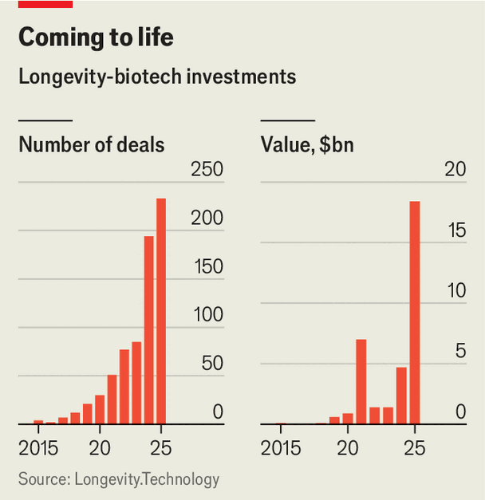

The quest for immortality has become serious business
As entrepreneurs peddle scans and supplements, biotechs are probing the mysteries of ageing
Nov 5th 2026
On a quiet street in the posh London neighbourhood of Chelsea resides HUM2N, a longevity clinic. Inside, a man in socks, gloves and a headband steps into a fridge-sized cabinet chilled to -110°C. A few minutes of “cryotherapy” leave him, by his own account, invigorated. Next door a woman lies in a hyperbaric chamber—a pressurised capsule resembling a small submarine—breathing pure oxygen. Other clients take intravenous drips of NAD+, a molecule that cells need to turn food into energy; or have their blood drawn, mixed with ozone and put back. A package of five sessions at the clinic costs £3,000 ($4,025).
The quest to live for ever has lately garnered new interest. Dario Amodei, boss of Anthropic, an artificial-intelligence lab, has suggested that his technology could raise the human lifespan to 150 years. Sam Altman, his counterpart at OpenAI, has put more than $180m into Retro Biosciences, a startup aiming to add ten healthy years to human life. The powerful beyond Silicon Valley are eager, too. Last year Xi Jinping and Vladimir Putin were overheard musing that organ transplants might one day make immortality possible.
HUM2N’s clients range from bosses to athletes to patients in their 80s with chronic disease, says Mohammed Enayat, its founder. As the world ages, interest in living longer is seeping into the mainstream. Across the OECD, a club of mostly rich countries, nearly a fifth of people are aged 65 or over; by 2050 more than a quarter will be. One of the loudest evangelists is Bryan Johnson, a tech entrepreneur who hopes never to die. He has turned his regime into a Netflix documentary and a YouTube channel with more than 2m subscribers.
Two very different industries are looking to seize on the opportunity. The first is a colourful and lightly regulated group of clinics and online businesses selling supplements, scans and treatments of sometimes dubious efficacy. The second is slower moving but more consequential. Working in concert with the world’s biggest drugmakers, a crop of biotechs is developing medicines that might slow ageing itself—or even reverse it.
The prize is enormous. Pharma bosses long dismissed obesity as a niche market. GLP-1s proved them wrong, and made Eli Lilly the first drugmaker worth $1trn. A medicine that slowed ageing could be bigger still. “You can sell one year of life,” muses Alex Zhavoronkov, the founder of Insilico Medicine, an AI drug-discovery firm. “How much can you charge?”
Such a drug may be years away, if it comes at all. Into the gap has rushed a business catering to the impatient, one that sits largely outside conventional health care. Insurers cover almost none of it, so customers pay in cash.
First comes measurement, on the belief that tracking everything will catch problems early enough to fix them. Providers offer blood tests, genome sequencing and full-body scans that promise to spot cancers or autoimmune disorders before symptoms appear. Prenuvo, one such firm, charges around $4,000 for an MRI scan of a patient’s entire body. Many sell annual subscriptions, retesting customers regularly to look for changes. Neko Health, a Swedish provider backed by Daniel Ek, a co-founder of Spotify, raised $700m in July ahead of its launch in America.
Next comes treatment. Much of that takes place in longevity clinics like HUM2N. Some estimates put the number of these at about 800 in America alone. The label is unregulated and vague, says Andrea Maier of the National University of Singapore, who co-founded a longevity clinic herself. At too many, she says, customers pick their own treatment, as though ordering pizza. “It’s not care.”
The most adventurous patients head to Roatán, an island off Honduras, where clinics offer gene therapy, stem-cell infusions and other experimental treatments. Others turn to social media, where a growing number of influencers peddle elixirs. Mr Johnson’s company, Blueprint, sells supplements, a powdered “longevity mix”—and olive oil. Then there are the many online businesses selling injectable “peptides”, including the “Wolverine stack”, a combination that is claimed to speed the repair of muscles and tendons.
Little of this rests on solid science. The American College of Radiology, a professional body, says there is “no documented evidence” that full-body screening is cost-effective or prolongs life. Such scans can lead to over-diagnosis, turning up harmless anomalies that prompt needless further tests. The treatments fare no better. Studies of NAD+ supplements have been inconclusive or shown limited effect. Peptides are a wild west, with vendors often labelling them as “for research use only” to dodge regulators.
In parallel, drugmakers are looking for scientifically proven ways to add healthy years—a far more arduous process. America’s Food and Drug Administration (FDA) does not treat ageing as a disease, so there is no route to approving a medicine that slows it. Would-be longevity drugs must instead win approval to treat a specific condition, often one linked to ageing, and then try to expand to others.
GLP-1s show how that might work. First approved for diabetes and then obesity, these drugs have since been shown to help with heart disease, sleep apnoea and kidney problems, all of which become more common with age. By lowering the risk of such conditions, the drugs may thus help people live longer. At a conference last month Lilly and Novo, its Danish rival, presented data suggesting that patients taking their GLP-1s were ageing more slowly. The yardstick was “ageing clocks”, which estimate how old a body really is (as opposed to how many birthdays it has had) from chemical marks on DNA or the mix of proteins in the blood. Novo found the biological age of the hearts of patients on its GLP-1s to be up to four years younger compared with those on a placebo, though all were overweight or diabetic. Lilly calls its own results preliminary.
Whatever GLP-1s turn out to do for ageing, they have already changed how big pharma thinks about the opportunity. Five or ten years ago drugmakers were chasing rare diseases, says Stephen Roper of L.E.K., a consultancy. But GLP-1s have re-established the appeal of mass-market drugs.

Rather than develop longevity treatments themselves, pharma giants mostly buy options on biotechs’ work. Lilly has struck a deal with Insilico worth up to $2.75bn. Novartis, a Swiss drugmaker, has one worth up to $550m with BioAge Labs, another biotech. The ranks of such startups are growing. Last year longevity biotechs raised $18.4bn, more than in the previous ten years combined (see chart).
Insilico calls its products “dual-purpose therapeutics”, each targeting ageing and a specific disease at the same time. A drug aimed only at ageing, argues Dr Zhavoronkov, its boss, would struggle to attract serious investors. Insilico’s most advanced candidate, rentosertib, treats idiopathic pulmonary fibrosis, a disease that scars the lungs. It entered a late-stage trial in July, making it one of the furthest along of any drug designed with ageing in mind. In an earlier trial of 42 patients, ageing clocks suggested that those on the drug were biologically younger than those on a placebo, by around three years on some measures, though all were already ill.
Other startups are looking to reverse ageing altogether. They include Mr Altman’s Retro; Altos Labs; and NewLimit, co-founded by Brian Armstrong, a crypto entrepreneur, which in June announced $435m in fresh funding. Most are betting on “epigenetic reprogramming”, the idea that the chemical switches on DNA, which become muddled with age, can be reset.
Previous efforts by drugmakers to create longevity treatments have ended in disappointment. In 2008 Britain’s GSK bought Sirtris, a biotech developing drugs inspired by resveratrol, a compound in red wine. Five years later it shut the firm down. Calico, launched by Google in 2013 to tackle ageing, has achieved little. Unity Biotechnology, a startup focused on clearing out ageing cells, laid off its entire staff in May last year after disappointing trials.
The new wave of biotech founders and investors argue this time will be different, thanks in part to AI, which they hope will accelerate discoveries. The first human trials for a drug targeting epigenetic reprogramming—a liver treatment developed by NewLimit—may begin next year. While the results are gathered, consumers will keep seeking immortality elsewhere. ■